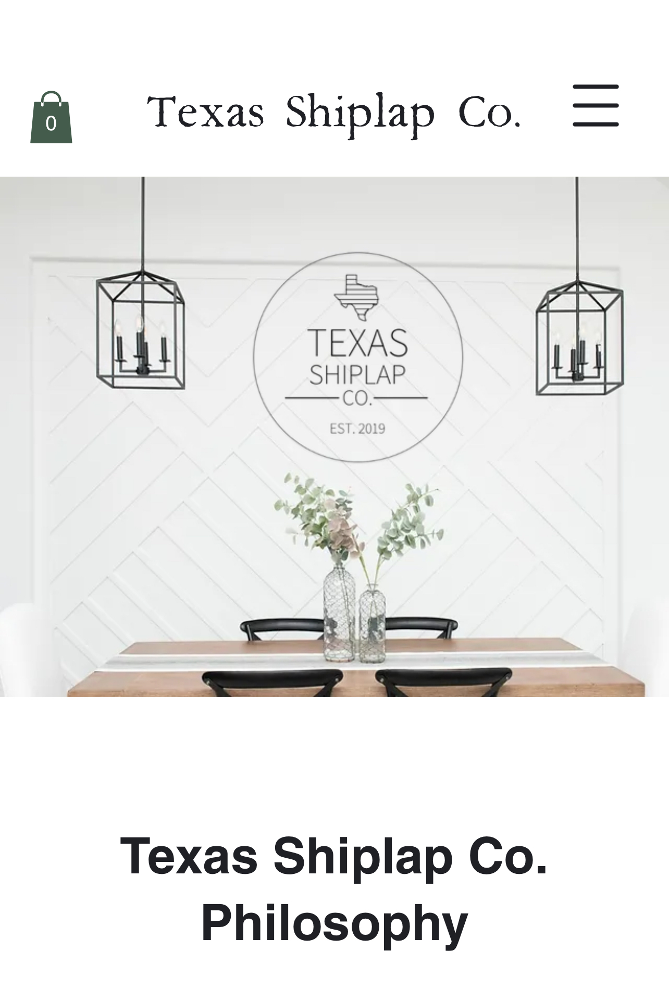

Visual Hierarchy
Razer
I believe that the Razer website does well at visual hierarchy becuase the draw it does the the product. It is clear from the time the page loads that they sell high preformance laptops
Fitt's Law
Feeding America
I believe that feeding America does good at applying fitts law. One reason why they would make it easy for a person to move the mouse in just a short space to help encourage people to donate to the cause. If it is easier for the user then they are more likey to donate.
White Space and Clean Design
Texas Shiplap
I think the Texas Shiplap website does a great job and using the white space to enhance there site experince. The boldness from the photo and the black text helps make the website seem morden and pleasing to the eyes.